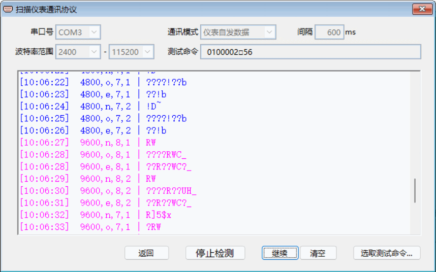
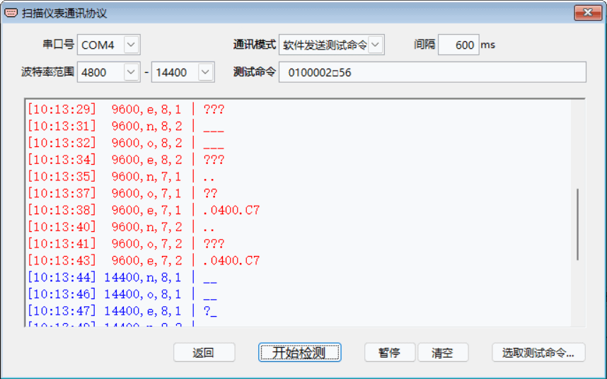

扫描仪表通讯协议
如果不知道仪表所用的串口通讯协议，可以通过“扫描仪表通讯协议”模块，进行扫描、分析，得到仪表实际所用的通讯协议。
点击主界面菜单中或工具栏上的“扫描仪表通讯协议”图标，将打开下图所示窗口
。窗口中的编辑框是用于监控通讯数据，其每一行表示扫描所用到的通讯协议和从串口接收的数据，中间用“|”符号分隔开，右边是接收到的数据。
扫描仪表通讯协议的一般步骤
1. 选择连接到仪表的对应串口，如“COM2”；
2. 选择“波特率范围”，此范围要尽可能涵盖仪表所用的波特率，常用“9600”；
3. 选择“通讯模式”，模式有“仪表自发数据”、“软件发送测试命令”两种，如果所用仪表有自动发送数据功能，可选择“仪表自发数据”并设置相应的间隔时间，否则选择“软件发送测试命令”，再依据所用仪表的通讯命令格式设置合适的测试命令；
4. 点击【开始检测】，进入逐个从低到高的通讯协议扫描，观察监控区中显示的通讯情况；
5. 分析扫描通讯信息，得出仪表所用的通讯协议 。

实例一：以“仪表自发数据”模式扫描， 分析其扫描信息，可知符合的通讯协议是“9600,n,8,1”。

实例二：以“软件发送测试命令”模式扫描， 分析其扫描信息，可知符合的通讯协议是“9600,e,7.1”。
